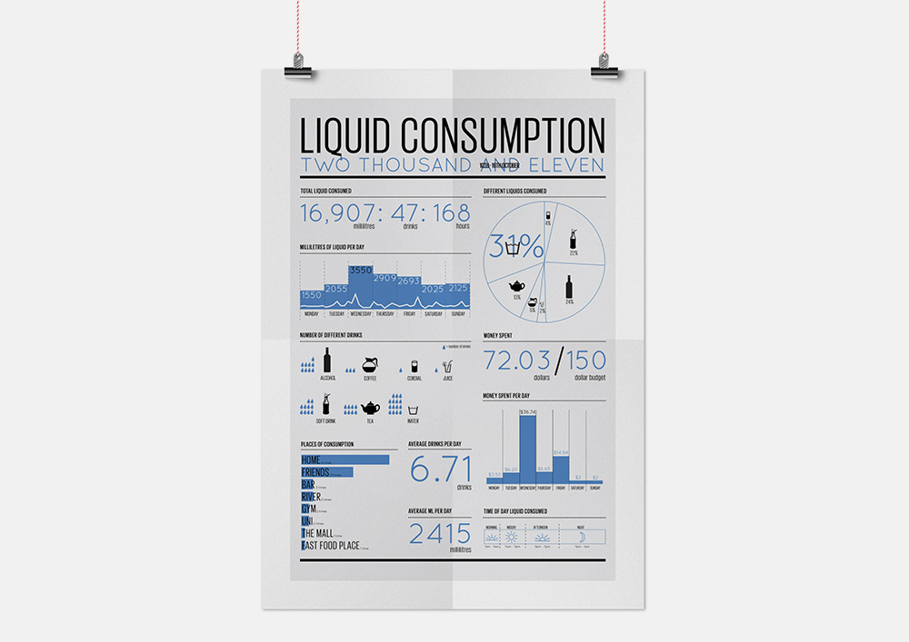
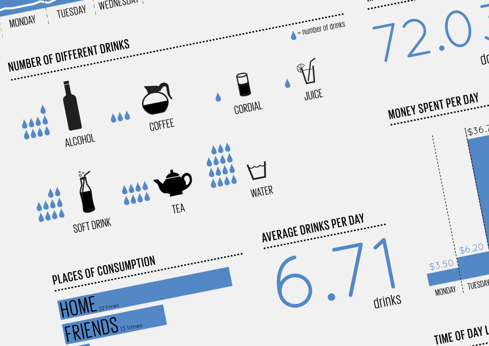
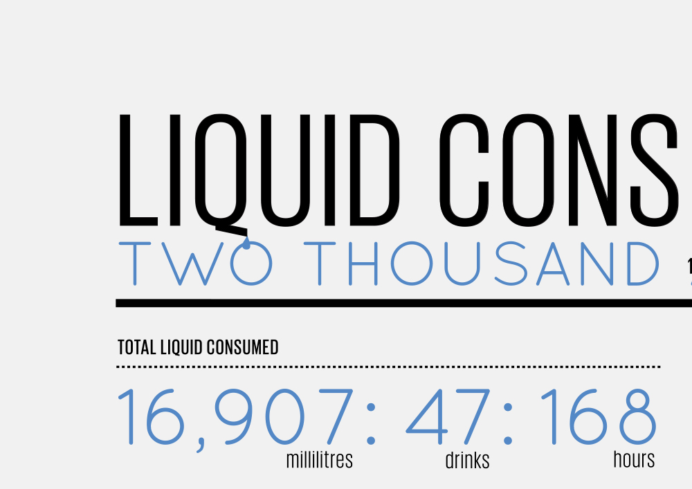

Liquid Data Visualisation
This data visualisation is a personal account of the amount of liquids I consumed during one week. The visualisation is a collection of different graphs and diagrams to show the aspects of my collection scope. Text and symbols have heavily been used to communicate the information easily and effectively, together with the colour blue which stimulates liquid and water, creates an uniform design.


